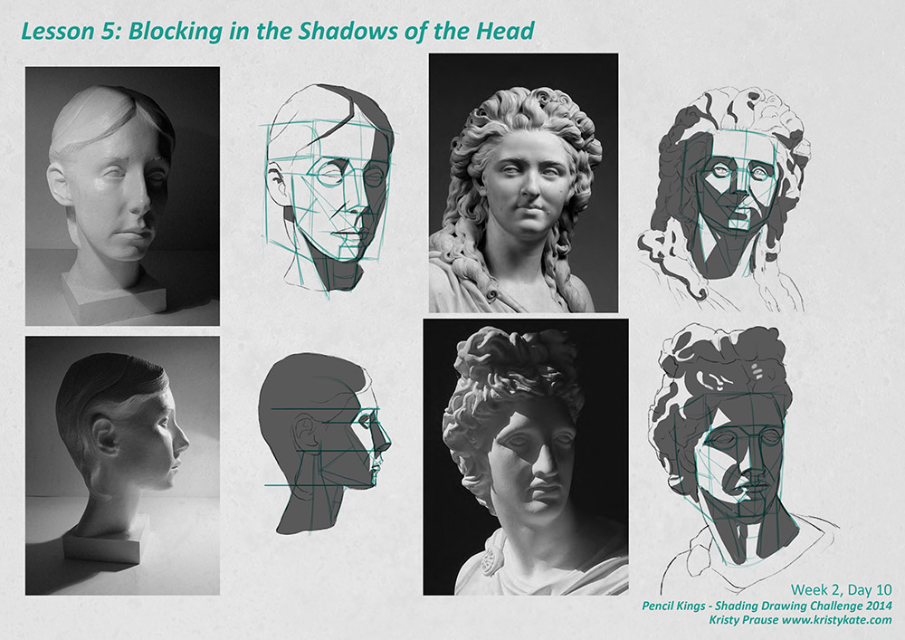
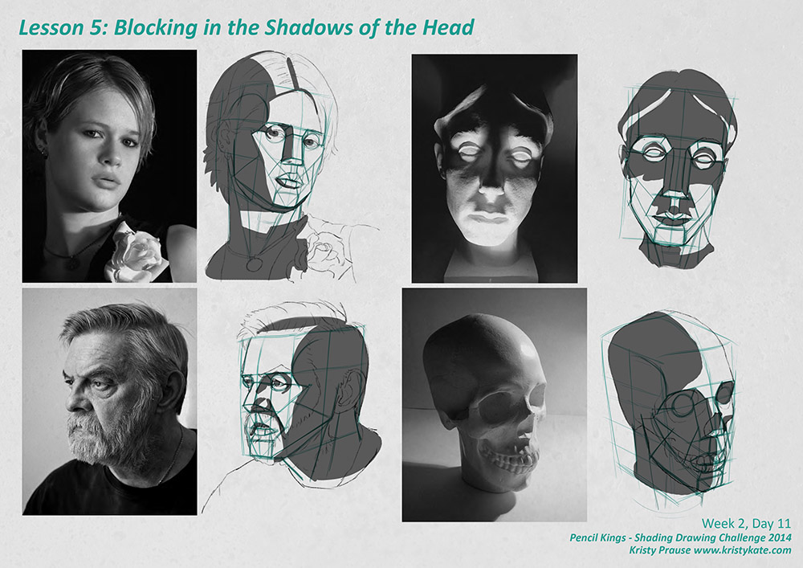
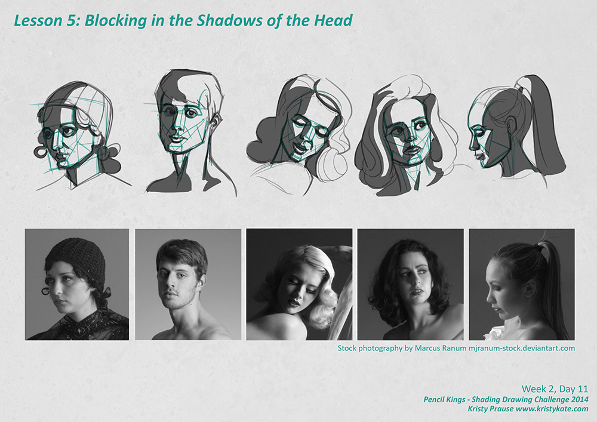

SDC - Blocking in the Shadow Value of the Head
For the month of September I'm taking part in Pencil Kings Shading Drawing Challenge, with instruction from the lovely Diane Kraus. You can see Diane's work on her website www.dianekraus.com.
This post covers my studies from Lesson 5: Blocking in the Shadows of the Head. My earlier studies can be viewed in the following posts:
* Learning Values with the Shading Drawing Challenge (SDC)
* SDC - Planes and Blocking in the Shadow Value
* SDC - Shading Simple Objects
* SDC - Learning the Planes of the Head
+ + +
Blocking in the Shadow Value of the Head
I'm going to keep this post short today, as I feel much of the concept of 'blocking in the shadows' was already covered in my earlier post SDC - Planes and Blocking in the Shadow Value.
Lesson 5: Blocking in the Shadows of the Head is essentially a stepping stone activity between learning the planes and fully shading the head. Not a bad thing at all as it got me thinking about what planes of the head would receive light and shadow under different lighting conditions.

Applying the basic area of shadow really helped me to see how the planes turn and curve and come together as a whole. It also made me more conscious of the position of the light source.

Looking back over these studies, I can see I missed a few shadows here and there. It pays to keep in mind that when blocking in the shadow value you are covering all shadows, including the core shadow, cast shadow and reflected light. Reflected light can sometimes be misleading and look like the mid tone or an area of light.
Look out for where the mid tone turns to shadow or core shadow too. The transition can be quite smooth, so in that situation I tend to block in the shadow up to the core shadow.

Since we've been using the templates and reference photos Diane supplied a lot, it was fun to break away in the final exercise of the lesson and sketch out our own templates to apply the planes and shadow area to (see above image). I selected stock photos from Marcus Ranum's collection (check out mjranum-stock.deviantart.com) to use as reference. It felt a little surreal sketching again... I suppose I have been concentrating on area and painting instead of line!
I think a great supplemental activity to this lesson would be to experiment creating your own lighting and apply it to the planes of the head. Perhaps create a template of the head (constructed out of planes) from the front and side view, duplicate it a dozen times and start blocking in the shadows from different lighting set ups. It would be a great way to test your knowledge of the planes and have a future reference for painting from imagination. (I'll have to try it myself when I have time).
Up next is the best part of the week, rendering the entire head in SDC Lesson 6: Shading the Face in Full Value.
+ + +
Enjoy art? I'd love to hear from you! Connect with me by leaving a comment or getting in contact via Twitter or Facebook.